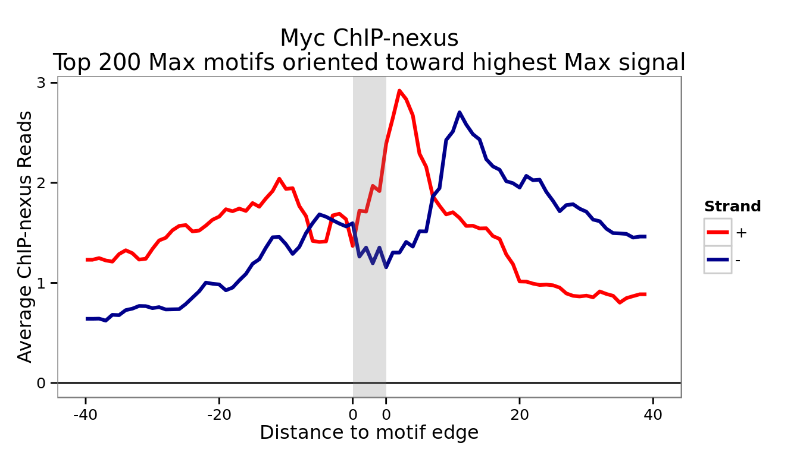
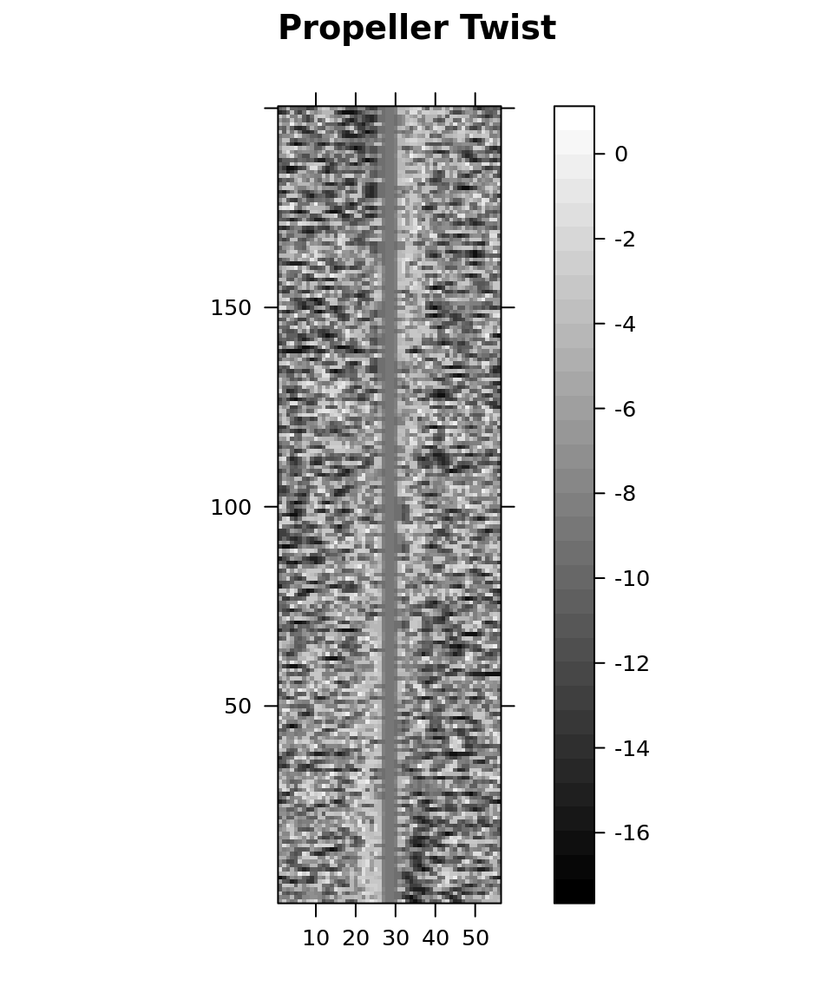
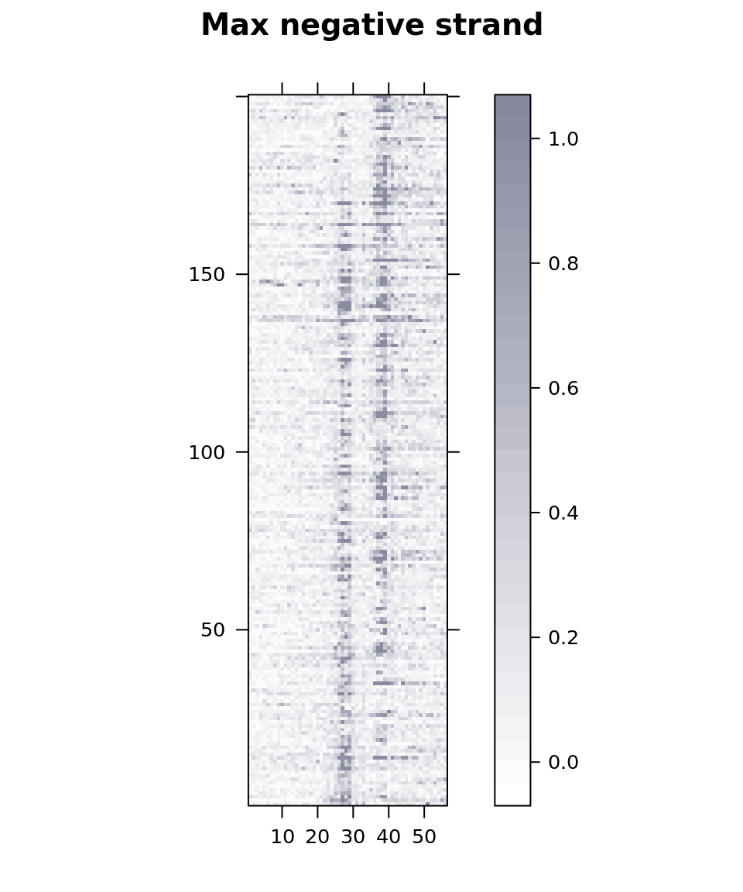
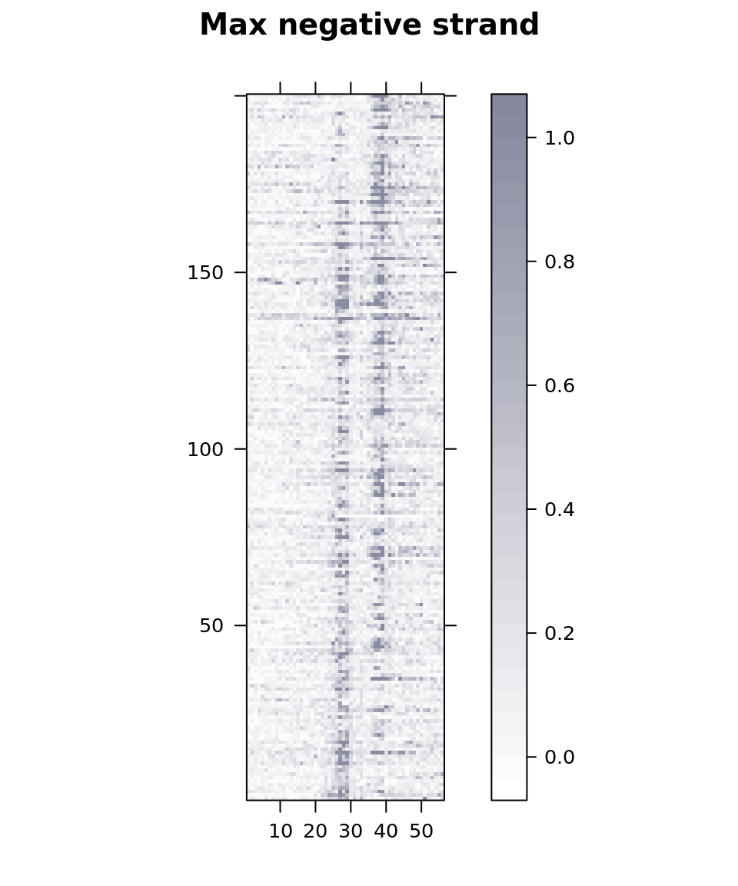

Figure 4: Max asymmetric binding
Project: ChIP-nexus methods paper
Author: Jeff Johnston
Generated: Thu Oct 23 2014, 09:00 PM
Panels B and C
We will first orient the Max motifs “towards” the side with the greater Max ChIP-nexus signal. As the motif is palindromic, we can simply assign a strand to the motif to give it a direction. We will define positive-strand motifs as those where the Max signal is greatest to the right of the motif, and negative-strand motifs will be those where the Max signal is greatest to the left.
We’ll start with the top 200 CACGTG motifs shown in Figure 4C. After assigning a direction to each motif, we can plot a ChIP-nexus metapeak to verify that we have properly oriented the motifs toward the direction of highest Max signal:

We can plot the Myc ChIP-nexus data for these same motifs to verify that the shifted Max footprint is not the result of detecting one half of the Max-Myc heterodimer:

Panel D: Base composition adjacent to Max-bound motifs
Now that the top motifs are oriented towards greater Max binding, we can look at the the base composition around these motifs:

Statistical tests (single base):
| position | pvalue | neg_log_pv |
|---|---|---|
| -16 | 0.58 | 0.24 |
| -15 | 0.67 | 0.17 |
| -14 | 0.45 | 0.35 |
| -13 | 0.65 | 0.19 |
| -12 | 0.17 | 0.76 |
| -11 | 0.27 | 0.57 |
| -10 | 0.60 | 0.22 |
| -9 | 0.20 | 0.70 |
| -8 | 0.36 | 0.44 |
| -7 | 0.63 | 0.20 |
| -6 | 0.30 | 0.53 |
| -5 | 0.57 | 0.24 |
| -4 | 0.36 | 0.44 |
| -3 | 0.34 | 0.46 |
| -2 | 0.07 | 1.16 |
| -1 | 0.00 | 12.27 |
| 0 | 0.00 | 55.01 |
| 1 | 0.00 | 47.25 |
| 2 | 0.00 | 55.01 |
| 3 | 0.00 | 55.01 |
| 4 | 0.00 | 47.25 |
| 5 | 0.00 | 55.01 |
| 6 | 0.00 | 12.46 |
| 7 | 0.00 | 5.99 |
| 8 | 0.00 | 24.89 |
| 9 | 0.00 | 5.57 |
| 10 | 0.09 | 1.04 |
| 11 | 0.08 | 1.12 |
| 12 | 0.66 | 0.18 |
| 13 | 0.33 | 0.48 |
| 14 | 0.48 | 0.32 |
| 15 | 0.79 | 0.10 |
| 16 | 0.29 | 0.54 |
| 17 | 0.34 | 0.46 |
| 18 | 0.59 | 0.23 |
| 19 | 0.48 | 0.32 |
| 20 | 0.64 | 0.20 |
| 21 | 0.55 | 0.26 |

Statistical tests (sliding 5bp window):
| center | pvalue | neg_log_pv |
|---|---|---|
| -14 | 0.05 | 1.27 |
| -13 | 0.09 | 1.06 |
| -12 | 0.13 | 0.89 |
| -11 | 0.06 | 1.25 |
| -10 | 0.01 | 2.08 |
| -9 | 0.02 | 1.77 |
| -8 | 0.04 | 1.45 |
| -7 | 0.04 | 1.42 |
| -6 | 0.02 | 1.70 |
| -5 | 0.02 | 1.81 |
| -4 | 0.01 | 1.92 |
| -3 | 0.00 | 4.37 |
| -2 | 0.00 | 18.73 |
| -1 | 0.00 | 27.68 |
| 0 | 0.00 | 58.33 |
| 1 | 0.00 | 73.27 |
| 2 | 0.00 | 17.80 |
| 3 | 0.00 | 17.80 |
| 4 | 0.00 | 74.64 |
| 5 | 0.00 | 77.85 |
| 6 | 0.00 | 59.99 |
| 7 | 0.00 | 49.62 |
| 8 | 0.00 | 21.17 |
| 9 | 0.00 | 19.56 |
| 10 | 0.00 | 17.03 |
| 11 | 0.00 | 5.13 |
| 12 | 0.02 | 1.78 |
| 13 | 0.18 | 0.73 |
| 14 | 0.47 | 0.33 |
| 15 | 0.43 | 0.36 |
| 16 | 0.38 | 0.42 |
| 17 | 0.29 | 0.53 |
| 18 | 0.32 | 0.49 |
| 19 | 0.11 | 0.96 |

Panel E
A previous study found that DNA shape can influence the binding specificity of bHLH transcription factors (Gordân, Shen, Dror, Zhou, Horton, Rohs, and Bulyk, 2013). It is possible that Max, like other bHLH transcription factors, is sensitive to DNA shape characteristics and the differences in base composition seen above are a reflection of this sensitivity.
To investigate this possibility, we first need to obtain genome-wide DNA shape information. A recent paper (Zhou, Yang, Lu, Dror, Machado, Ghane, Felice, and Rohs, 2013) provides a web service called DNAShape that calculates DNA shape parameters given an input sequence. Genome-wide data for Drosophila melanogaster was constructed by obtaining DNA minor groove width and propeller twist values for all possible 5-mers and then mapping those values to the genome sequence.
Using this data, we can examine these two DNA shape parameters around the Max binding motifs:


The maximum propeller twist value is found 3 bp downstream of the motif right edge. We can use a paired t-test to compare these values with the corresponding values 3 bp upstream of the motif’s left edge:
This test yields a p-value of 3.478459110^{-22}.
Panel F
The sharp increase in the DNA “propeller twist” on the side of the motif with higher Max binding is quite pronounced. We can visualize this association with a heatmap by ordering the (directionless) motifs by the difference in propeller twist between the left and right sides:

 

The ChIP-nexus heatmap shows that when the propeller twist difference is most extreme (at the top and bottom of the heatmap), Max appears to prefer the side with higher (less negative) propeller twist.
References
[1] R. Gordân, N. Shen, I. Dror, et al. “Genomic Regions Flanking E-Box Binding Sites Influence DNA Binding Specificity of bHLH Transcription Factors through DNA Shape”. In: Cell Reports 3.4 (Apr. 2013), pp. 1093-1104. DOI: 10.1016/j.celrep.2013.03.014.
[2] T. Zhou, L. Yang, Y. Lu, et al. “DNAshape: a method for the high-throughput prediction of DNA structural features on a genomic scale”. In: Nucleic Acids Research 41.W1 (May. 2013), pp. W56-W62. DOI: 10.1093/nar/gkt437.
Session information
For reproducibility, this analysis was performed with the following R/Bioconductor session:
R version 3.1.1 (2014-07-10)
Platform: x86_64-pc-linux-gnu (64-bit)
locale:
[1] LC_CTYPE=en_US.UTF-8 LC_NUMERIC=C
[3] LC_TIME=en_US.UTF-8 LC_COLLATE=en_US.UTF-8
[5] LC_MONETARY=en_US.UTF-8 LC_MESSAGES=en_US.UTF-8
[7] LC_PAPER=en_US.UTF-8 LC_NAME=C
[9] LC_ADDRESS=C LC_TELEPHONE=C
[11] LC_MEASUREMENT=en_US.UTF-8 LC_IDENTIFICATION=C
attached base packages:
[1] grid stats4 parallel stats graphics grDevices utils
[8] datasets methods base
other attached packages:
[1] reshape2_1.4 digest_0.6.4
[3] yaml_2.1.13 lattice_0.20-29
[5] knitcitations_1.0-1 seqLogo_1.32.0
[7] plyr_1.8.1 ggplot2_1.0.0
[9] BSgenome.Dmelanogaster.UCSC.dm3_1.4.0 BSgenome_1.34.0
[11] rtracklayer_1.26.1 Biostrings_2.34.0
[13] XVector_0.6.0 GenomicRanges_1.18.1
[15] GenomeInfoDb_1.2.0 IRanges_2.0.0
[17] S4Vectors_0.4.0 BiocGenerics_0.12.0
[19] xtable_1.7-4
loaded via a namespace (and not attached):
[1] base64enc_0.1-2 BatchJobs_1.4 BBmisc_1.7
[4] bibtex_0.3-6 BiocParallel_1.0.0 bitops_1.0-6
[7] brew_1.0-6 checkmate_1.5.0 codetools_0.2-9
[10] colorspace_1.2-4 DBI_0.3.1 evaluate_0.5.5
[13] fail_1.2 foreach_1.4.2 formatR_1.0
[16] GenomicAlignments_1.2.0 gtable_0.1.2 htmltools_0.2.6
[19] httr_0.5 iterators_1.0.7 knitr_1.7
[22] labeling_0.3 lubridate_1.3.3 MASS_7.3-35
[25] memoise_0.2.1 munsell_0.4.2 proto_0.3-10
[28] Rcpp_0.11.3 RCurl_1.95-4.3 RefManageR_0.8.34
[31] RJSONIO_1.3-0 rmarkdown_0.3.3 Rsamtools_1.18.0
[34] RSQLite_0.11.4 scales_0.2.4 sendmailR_1.2-1
[37] stringr_0.6.2 tools_3.1.1 XML_3.98-1.1
[40] zlibbioc_1.12.0